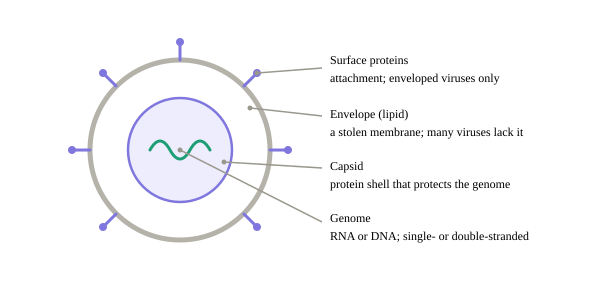
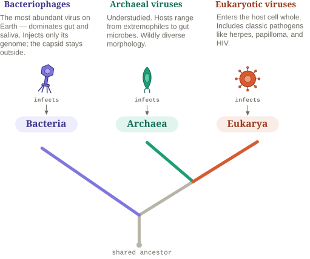
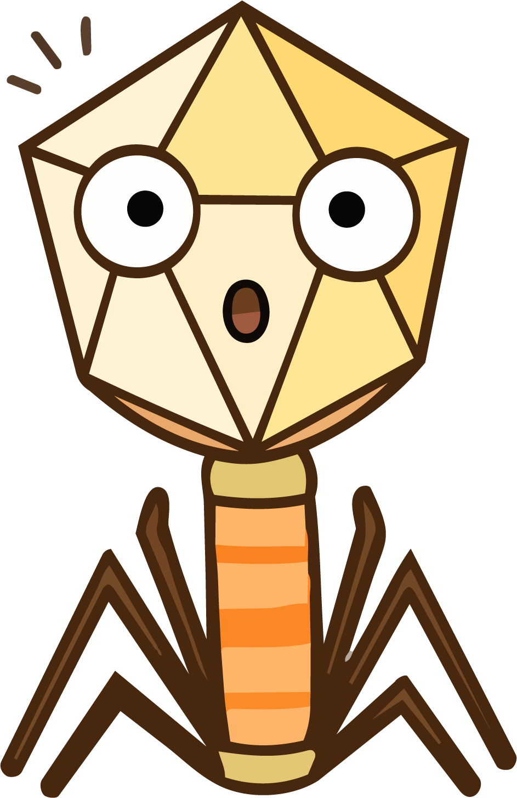

ssRNA
coronavirus, influenza
The smallest thing you’ll spend this whole guide chasing.
Starting a new analysis is exciting, but before you jump into methods and sequencing types, you need to understand what you’re actually looking for. This chapter covers the basics: simple ideas, but very important for your virome analysis.
Viruses are the tiniest known packages of life — barely alive, arguably not alive at all — yet the most abundant biological entities on the planet.
Their structure is simple: a piece of genetic material — RNA or DNA, single- or double-stranded — wrapped in a protein shell called the capsid. Some viruses add an outer lipid envelope, stolen from the host and studded with surface proteins that help them latch onto host cells (like a coronavirus’s spikes).

Same simple idea, built many ways:
Illustration in progress
Final morphologies figure — matched to the anatomy style above. These are quick placeholders.
Viruses are abundant and extremely diverse, and their phylogeny and taxonomy can get complicated. To keep things clear, we’ll sort them along three axes that help us understand their biology and how to explore them: their host, their genome type, and their physical state.
who we infect — the main one
Remember we said viruses are barely alive — arguably not alive at all? That comes down to one thing: viruses don’t carry the machinery to replicate their own genome, the way other living organisms do. They borrow that machinery from another living being — and that being is what we call the host.

what our genome is made of — RNA or DNA, single or double strands
Every viral genome is one of four combinations: RNA or DNA, single- or double-stranded. Depending on what you’re looking for, your prep changes: if you’re after RNA viruses, you need an extra reverse-transcription step, so a DNA-only prep quietly misses every single one of them.
RNA
DNA
One strand (ss)
ssRNA
coronavirus, influenza
ssDNA
Anelloviridae (TTV), Microviridae
Two strands (ds)
dsRNA
rotavirus
dsDNA
most phages, herpes, adenovirus
how we live relative to the host — and it branches
Some viruses live as free particles; others are written right into the host’s own genome. This is the axis that matters most when you analyze: a free virion is what virus-like particle (VLP) preps enrich for, while an integrated one hides inside the host’s contigs and needs different tools to spot. Match your method to the state you’re after, or you may miss the virus entirely.
state · 1
state: exogenous
Exogenous
A free particle that infects from outside — the classic virion.
→ can integrate into the host genome →
state · 2
state: endogenous
Endogenous
Genome written into the host’s DNA — inherited or long-resident, not a free particle.
endogenous forms, by host
Prophages bacterial host
Proviruses archaeal host
ERVs eukaryotic host
retroviral non-retroviral (EVEs)

Keep this axis in mind. State is the one that matters most for analysis — it can decide whether your method finds me at all. We cash it in under How-to.